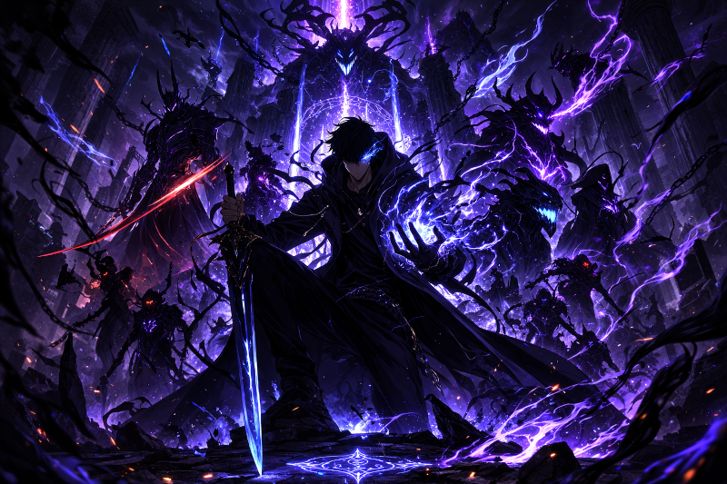
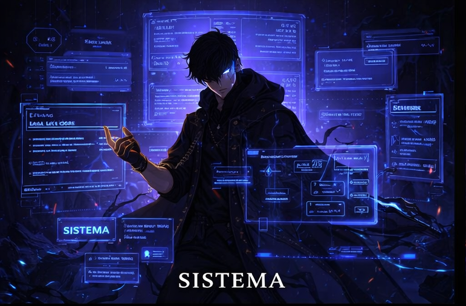
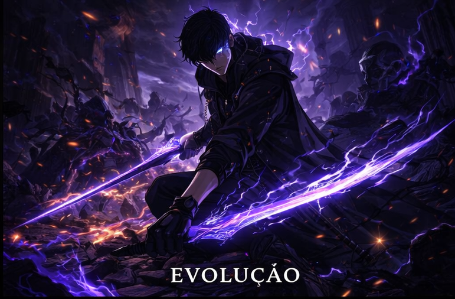
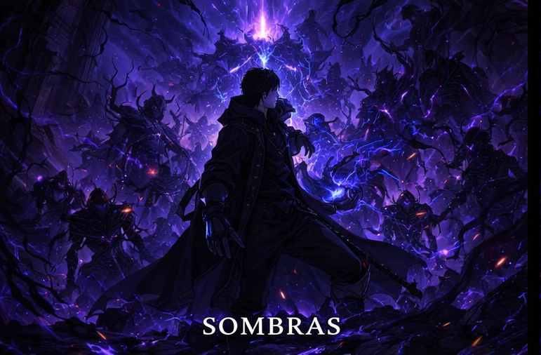
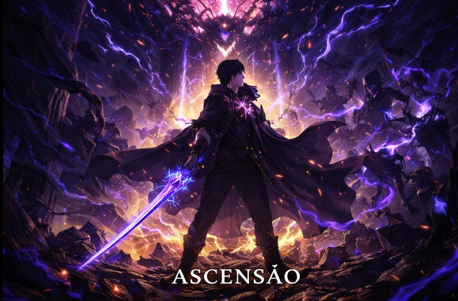

A jornada do caçador mais fraco ao ser mais poderoso do mundo

Em um mundo onde portais misteriosos começaram a surgir ao redor do planeta, conectando a Terra a dimensões repletas de monstros, a humanidade precisou se adaptar para sobreviver. Algumas pessoas despertaram habilidades especiais e passaram a ser conhecidas como Caçadores.
Esses Caçadores são classificados por ranks, que vão do E ao S, determinando seu nível de poder e importância nas missões dentro das masmorras.
Entre todos eles existia um nome conhecido por outro motivo: fraqueza
Sung Jin-Woo era considerado o caçador mais fraco da humanidade. Classificado como Rank E, ele mal conseguia sobreviver às missões mais simples. Mesmo assim, continuava lutando para sustentar sua família e proteger aqueles que amava.
Tudo muda quando ele participa de uma missão que revela uma masmorra dupla escondida dentro de outra. O que deveria ser uma operação comum se transforma em um massacre. Diante da morte iminente, Jin-Woo faz uma escolha que altera completamente seu destino.
Ele desperta algo único.
O SISTEMA

Após o incidente na masmorra dupla, Jin-Woo recebe acesso a uma interface invisível aos outros Caçadores. Uma espécie de sistema semelhante ao de um jogo de RPG.
Esse Sistema concede:
- Missões diárias obrigatórias
- Recompensas por completar desafios
- Penalidades severas por falhas
- Pontos de atributo
- Subida de nível
- Habilidades exclusivas
- Inventário e loja especial
Diferente de qualquer outro Caçador, Jin-Woo se torna o único capaz de evoluir continuamente. Cada batalha o fortalece. Cada desafio o aproxima de um novo patamar.
A EVOLUÇÃO

No início, sua força era insignificante. Seus atributos eram baixos e sua resistência limitada. Porém, com disciplina e estratégia, ele começa a distribuir seus pontos de atributo com inteligência, aumentando força, agilidade e percepção.
Sua evolução não é apenas física.
Jin-Woo se torna mais confiante.
Mais estratégico.
Mais frio em combate.
O que antes era medo, transforma-se em controle absoluto da situação.
AS SOMBRAS

Ao alcançar um novo nível de poder, Jin-Woo desperta uma habilidade rara: a extração de sombras. Ele pode transformar inimigos derrotados em soldados leais, criando seu próprio exército.
Entre suas sombras mais marcantes estão:
Igris – O cavaleiro leal e imponente.
Tank– A força bruta e resistência.
Beru – Um dos guerreiros mais poderosos sob seu comando.
Seu poder deixa de ser individual. Ele se torna um exército de um homem só.
A ASCENSÃO

A história de Solo Leveling não é apenas sobre batalhas contra monstros. É sobre crescimento constante. Sobre ultrapassar limites impostos pelo mundo. Sobre transformar fraqueza em domínio absoluto.
O que começa como a jornada de sobrevivência do caçador mais fraco se transforma na ascensão de uma entidade que desafia a própria ordem do mundo.
Mais do que força, essa é uma história sobre evolução.